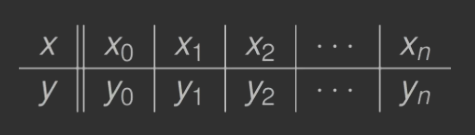
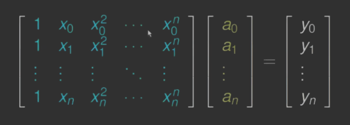

1. DEF
Rozpatrzmy następujący problem. Mamy dane n+1 punktów (xi,yi):

Węzły xi,i=0,…,n są parami różne. Trzeba znaleźć wielomian p∈Πn taki, że p(xi)=yi(0≤i≤n).
Gdybyśmy chcieli otrzymać wielomian interpolacyjny w postaci p(x)=a0+a1x+a2x2+⋯+anxn, spełniający p(xi)=yi dla 0≤i≤n, wówczas musimy wyznaczyć n+1 współczynników a0,a1,…,an. Co prowadzi do układu równań z macierzą Vandermonde’a, źle uwarunkowaną:

2. Twierdzenie#1
Dla węzłów xi i liczb yi istnieje dokładnie jeden wielomian p∈Πn spełniający warunki interpolacji p(xi)=yi(0≤i≤n).
2.1. D-d
Wprowadźmy wielomian li stopnia n li(x)=j=0,j=i∏nxi−xjx−xj,li(x)={01x=xjx=xi.
Otrzymujemy wielomian Ln∈Πn spełniający warunki interpolacji Ln(x)=i=0∑nyili(x),Ln(xj)=i=0∑nyili(xj)=yj.
(Jednoznaczność) Załóżmy, że istnieją dwa wielomiany L1,L2∈Πn. Spełniające warunki interpolacji. Zatem (L1−L2)(xj)=0(0≤j≤n).
(L1−L2)∈Πn oraz n+1 miejsc zerowych (sprzeczność). Stąd L1≡L2.
3. Postać Lagrange’a wzoru interpolacyjnego
Ln(x)=i=0∑nyij=0,j=i∏xi−xjx−xj
4. Twierdzenie o błędzie interpolacji wielomianowej
Niech - f∈Cn+1[a,b] - p∈Πn będzie wielomianem interpolacyjnym na węzłach x0,x1,…,xn∈[a,b].
Wówczas istnieje ζx∈(a,b) (zależna od x) taka, że f(x)−p(x)=(n+1)!1f(n+1)(ζx)i=0∏n(x−xi).
4.1. Przykład
Jaki jest błąd interpolacji funkcji f(x)=sinx za pomocą wielomianu stopnia 9 w przedziale [0;1].
Korzystamy z Twierdzenia#2. Szacujemy ∣∣∣f(10)(ζx)∣∣∣≤1, ∏i=09∣(x−xi)∣≤1 dla x∈[0;1].
∣sinx−p(x)∣=10!∣∣∣f(10)(ζx)∣∣∣i=0∏9∣(x−xi)∣≤10!1<2.8⋅10−7.
4.2. D-d
Jeżeli x jest węzłem interpolacyjnym xi to obie strony równanie się zerują (w twierdzeniu).
Ustalmy x taki, że x=xi i zdefiniujmy funkcję ϕ w(t)=i=0∏n(t−xi),ϕ≡f−p−λw. gdzie λ jest liczbą rzeczywistą dobraną tak, aby ϕ(x)=0. Stąd λ=w(x)f(x)−p(x).
Funkcja ϕ∈Cn+1[a;b] oraz ϕ zeruje się w n+2 punktach x,x0,x1,…,xn. Z twierdzenia Rolle’a pochodna ϕ′ ma co najmniej n+1 miejsc zerowych. Podobnie ϕ′′ ma co najmniej n miejsc zerowych. Stosując dalej twierdzenie Rolle’a, dostajemy, że ϕn+1 ma co najmniej jedno zero, powiedzmy ζx∈(a;b). ϕ(n+1)=f(n+1)−p(n+1)−λw(n+1)=f(n+1)−(n−1)!λ.
Stąd 0=ϕ(n+1)(ζx)=f(n+1)(ζx)−(n+1)!λ=f(n+1)(ζx)−(n+1)!w(x)f(x)−p(x). Ostatecznie f(x)−p(x)=(n+1)!1f(n+1)(ζx)i=0∏n(x−xi). □